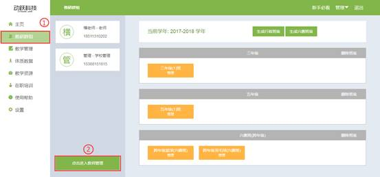

如何生成教师账号
视频教程：
教师账号为教师进入平台的唯一凭证，生成教师账号后，方可操作平台的内容。
1. 登录动跃体育教学管理平台后，进入平台操作界面。
2. 点击教研群组 > 点击进入教师管理页面，如下图:

3. 点击生成教师账号，添加新成员，如下图，请按要求填写。
>输入成员的姓名：成员的名称，可填写教师名称或者自己想要设置的昵称。
>输入成员手机号码：填写教师手机号码，手机号码即是动跃体育教学管理平台的账号。
>选择成员权限：生成学校老师，管理员权限为最高权限，可操作所有内容，教师权限可操作除账号设置以外的其他内容。

4. 点击确认后，生成教师账号成功，系统会自动发送一条短信到该手机号上，以及该账号初始密码，手机号即为登陆账号。
5. 账号生成后，登陆进入，点击教研群组 > 点击进入教师管理页面，在页面左边显示所有已经生成的账号，点击编辑，进入账号编辑页面，可更改之前设置的基本信息，点击确定即保存成功。
6. 转让学校管理员，如管理员职位调动、辞职或其他因素要脱离管理员的身份，可直接点击转让学校管理员身份，转让给学校其他教师。
>点击教研群组> 点击进入教师管理页面>点击转让学校管理员，选择需要给予转让职位的教师，即可转让给该老师。
>点击确认后，系统弹出窗口显示修改管理员成功。